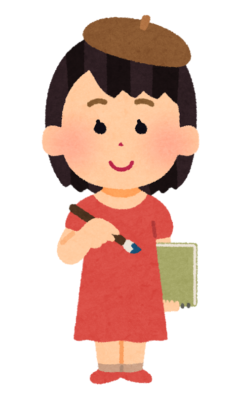

OVERVIEW
The Sakuran Japanese Cultural Club (SJCC) is a club tailored for students with a shared interest in Japanese culture.
SJCC creates a community which fosters bonds and educates its members through fun club activities.
Students interested in learning a little more about Japan, or are simply looking for an easygoing club to get a break from the stress of school, all are welcome.
If you enjoy anime, manga, language, or anything Japanese, this is the club for you!
DIVISIONS
SJCC is split into separate divisions with different club activities, each pertaining to an aspect of Japanese culture.
Members of SJCC are free to join whichever division they'd like, however many they'd like, whenever they'd like.
Each division holds club activities at different times and days. Members can choose whatever fits them best.
MANGA ANIME ILLUSTRATIONS DIVISION (MAID)
For artists looking to learn techniques to improve their anime art, or those that simply enjoy the entertainment medium,
come to a MAID session to learn how to draw the titular manga style. Sessions may cover topics such as drawing the
individual body parts of an anime character, or even topics such as basic colour theory and character design.
Session Times:
Online: Saturday, 5:00 - 7:00 p.m.
Physical (once a month): Friday, 4:30 - 6:30 p.m.
*Physical session timings may vary
Bringing your own materials is recommended.

THE PEOPLE BEHIND IT
STAFF-IN-CHARGE
Kenji Ota is the lecturer-in-charge for SJCC. He is also responsible for teaching in lectures about Japanese language
here at NYP.
DIVISION LEADERS
Ary, the president of the MAID division, is responsible for leading the MAID sessions.